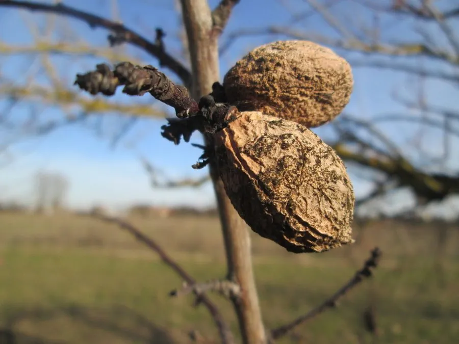

农作物与经济植物 · 植物界
扁桃 Prunus dulcis

扁桃是蔷薇科落叶乔木，果核内的种仁即巴旦木，香脆富含油脂，可炒食或制糕点，是世界重要的坚果类经济作物。
- 分类
- 门被子植物门纲双子叶植物纲目蔷薇目科蔷薇科属李属
- 栖息环境
- 干旱温带丘陵，喜光、耐旱、耐寒
- 地理分布
- 原产西亚与中亚，主产于美国加州、伊朗与中国新疆
- 保护级别
- 暂无评估（栽培作物）
物种志
扁桃是蔷薇科落叶乔木，株高 4–8 m，树皮灰褐色，树姿开张，幼树生长较快，叶片披针形，边缘有细锯齿。花淡粉或白色，先于叶开放，自花结实率因品种而异。果实为核果，外果皮薄，成熟后开裂，露出表面有网纹的硬核，核内种仁扁圆，即巴旦木。
扁桃原产西亚与中亚干旱地区，伊朗、叙利亚一带栽培历史悠久，后传入地中海、美洲和澳大利亚。它喜干燥、光照充足，耐旱耐寒，适宜在排水良好的沙壤土生长，花期怕霜冻。果实夏季成熟，采收后去外皮、破壳取仁。种仁可炒食、盐焗、制杏仁露和糕点；中国新疆、美国加州是重要产区。扁桃耐旱，适合干旱少雨地区发展，巴旦木常作为零食或烘焙原料。
形态与习性
- 株高4–8 m，落叶乔木
- 叶披针形，边缘有细锯齿
- 花淡粉或白色，先叶开放
- 果实核果，硬核有网纹
- 种仁扁圆，即巴旦木
- 用途炒食、杏仁露与糕点
趣味知识
- 我们常吃的巴旦木，就是扁桃的种仁。
- 扁桃原产西亚干旱地区，美国加州是主要产区。
- 扁桃花期怕霜冻，果园常需防寒措施。